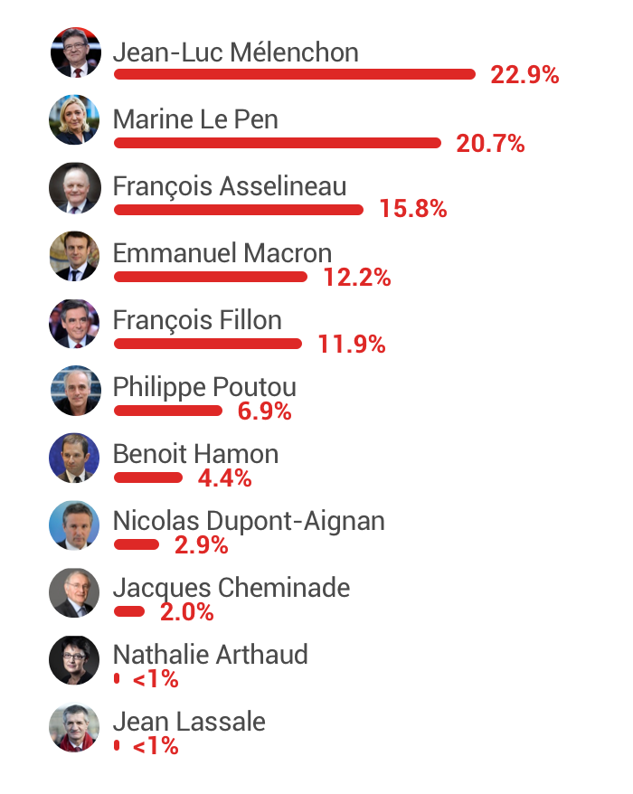
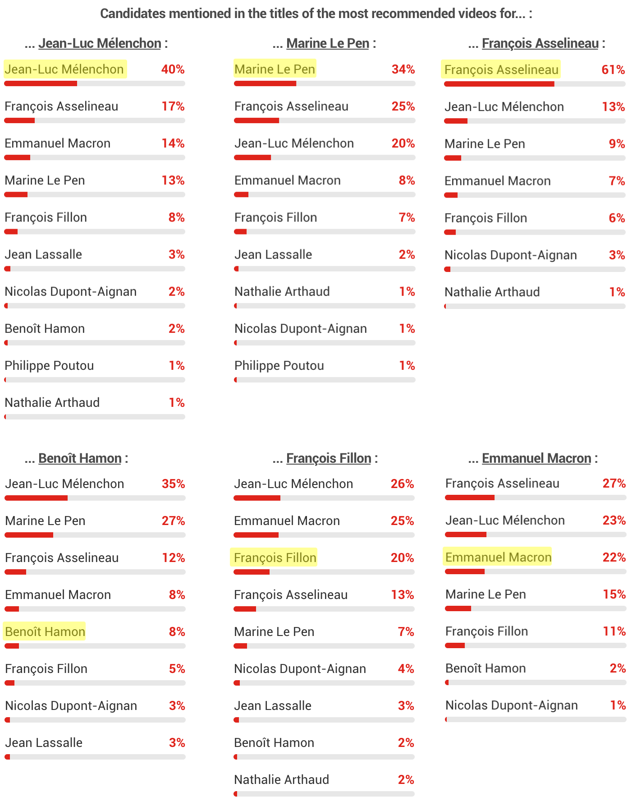

Five days before the French presidential elections, the data we collected indicates that YouTube’s recommendation algorithm promotes three candidates more than others: the main far-left candidate Mélenchon, the candidate of the alt-right National Front Le Pen, and a less-known candidate supporting “Frexit,” Asselineau.
These trends are startling, especially since YouTube is the biggest video hosting platform in France, with more than 28 million unique visitors in February 2017 - almost half of France’s population (source: Médiamétrie).
For each video one watches, YouTube suggests 20 additional videos via an “Up next” list that plays automatically when “Autoplay” is enabled. These videos are determined by an algorithm designed by YouTube. We wanted to know, when a French user follows recommended videos, what does the average YouTube algorithm-based recommendation for each candidate look like?
To find out, we wrote a script that searches the name of a candidate, and follows YouTube’s top three recommendations six times. It thus stores the most recommended videos. We ran the script for each of the 11 presidential candidates daily since March 27th. We report the results on the site algotransparency.org.
We collected the most recommended 1,542 unique videos based on data from one search per candidate per day between March 27th and April 10th. Below is a frequency-based ranking of the candidates’ last names in the titles of these videos:
Mélenchon, Le Pen and Asselineau make up nearly 60 percent of the candidates that are mentioned in the titles of the most recommended videos. It is particularly surprising for Asselineau to be recommended so much because he received less than 1 percent of voter preferences in the latest polls.
Perhaps predictably, each of these three candidates is the top recommended candidate when searching for their name. However, we have found that starting from a search of any other candidate, these three candidates are still the most recommended:
We also observed that for some candidate-daily data, half of the most suggested videos were later removed from YouTube (for example, for Le Pen on the 27th of April) . Most of these videos were removed because the associated accounts were terminated by either YouTube or by the producers themselves. Were those accounts abusive?
The metrics chosen by YouTube to optimize their recommendation algorithms have a large impact on which candidates are most recommended by the video platform.
Do metrics like retention and watch time, that YouTube uses, lead to promoting the most populist candidates?
We aim to inform citizens regarding the workings and consequences of the algorithms that shape our access to information. In our first project, we turned our attention to the YouTube video platform out of concern with the spread of fake news, and with the role that social media recommendations are purported to have played in influencing voting decisions in several countries. We are currently developing tools for other platforms.
AlgoTransparency is led by Guillaume Chaslot, Adrien Montcoudiol, Soline Ledésert, Nicolas Wielonsky, Frédéric Bardolle et Mathieu Grac, as part of the non-profit organization Data for Good.
Contact : hello@algotransparency.org
Twitter : @HelloAlgo
Source viewership and ratings (in French): Médiamétrie/Net Ratings 2017, desktop and mobile.